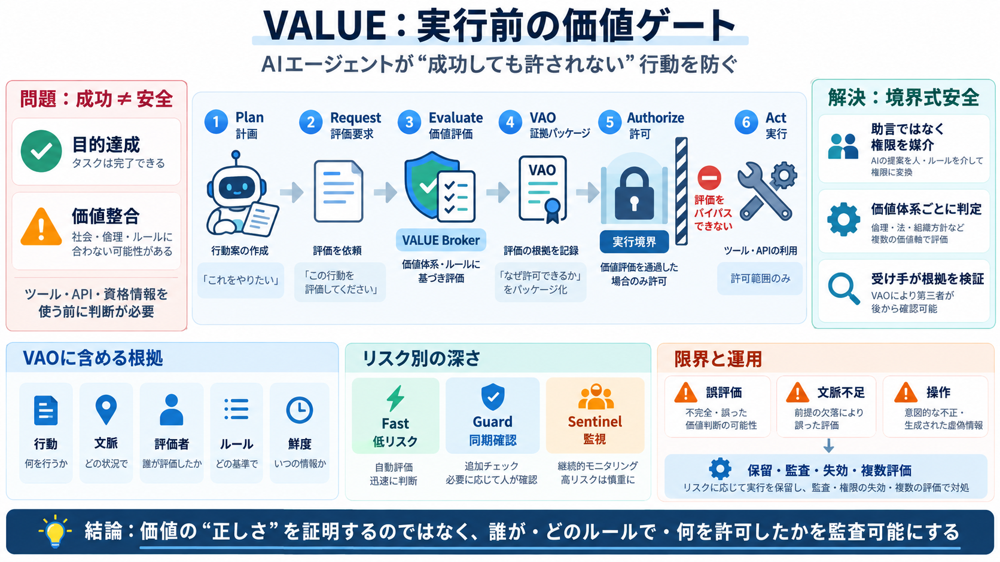

draft-messous-eat-ai-00 - Entity Attestation Token (EAT) Profile for Autonomous AI Agents
20 August 2026 [Page 6]Internet-Draft EAT-AI-Agents February 2026MESSOUS Expires 20 August 2026 [Page 7]Internet-Draft E…

20 August 2026 [Page 6]Internet-Draft EAT-AI-Agents February 2026MESSOUS Expires 20 August 2026 [Page 7]Internet-Draft E…
Attestation Token (EAT), specified in RFC 9711 (Proposed Standard, 2025) . Beyond the architecture (RFC 9334) and EAT (R…
| | 12 pages draft-ietf-rats-daa-09 Direct Anonymous Attestation for the Remote Attestation Procedures Architecture …
The RATS architecture allows for an entity to function in multiple roles (Section 6) and for composite devices (Section …
January 2027 [Page 6]Internet-Draft AIPF July 2026Sarker, et al. Expires 20 January 2027 [Page 7]Internet-Draft AIPF Jul…